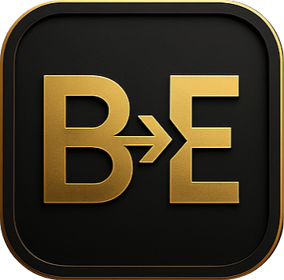

Single file output
The generated EXE carries the batch payload inside itself, so users only receive one file.

ExeFoundryRust powered BAT to EXE packaging
ExeFoundry embeds your entire .bat payload and icon into one portable
.exe. The converter runs on Windows, macOS, and Linux, so release work can
happen from any development machine.
exefoundry --input tool.bat --output Tool.exe
OK: Built Tool.exe
Tool.exe now contains:
BAT payload
embedded icon
argument forwardingThe generated EXE carries the batch payload inside itself, so users only receive one file.
Use the bundled ExeFoundry logo or pass your own icon. The icon is written into the EXE resource table.
Run the converter on Windows, macOS, or Linux while producing Windows EXE files for BAT utilities.
Playground
Pick a platform binary, name your input and output, choose console mode, and preview the command. The playground stays in your browser and does not upload files.
Edit this sample and download it locally to test ExeFoundry.
Downloads
Workflow
Read the source BAT bytes exactly as written.
Copy a small Windows runner template into the output EXE.
Embed the bundled icon or your custom icon into the EXE resources.
Append the BAT payload and metadata so the EXE can extract and run it.